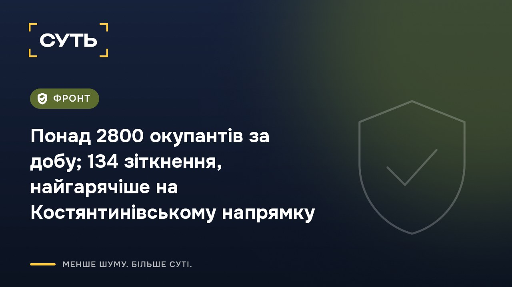

Понад 2800 окупантів за добу; 134 зіткнення, найгарячіше на Костянтинівському напрямку

- За листопад підрозділи МВС заявили про понад 10 600 окупантів і понад 2500 одиниць техніки ураженими та понад 18 000 знищених дронів. — МВС
- Генштаб ЗСУ повідомив про понад 2800 російських окупантів, втрачених за добу 27 листопада. Загальні втрати противника з 24.02.22 опубліковано окремо. — Українська правда, Генштаб ЗСУ
- За добу 134 бойові зіткнення; найгарячіші Костянтинівський, Покровський і Слов'янський напрямки. Ворог зробив 47 авіаударів. — Укрінформ, Генштаб ЗСУ
- Журналісти проаналізували понад 11 млн свідоцтв про смерть із Росстату й виявили майже пів мільйона російських військових, загиблих у війні в Україні. — The Guardian
- За даними СБС «Підрахуйка», за 27 листопада втрачено 852 окупанти, а з 1 по 27 листопада — 17 530. — Мадяр (СБС)
- Інститут вивчення війни (ISW) опублікував оцінку російської наступальної кампанії станом на 27 листопада. — ISW
Ця новина — з Telegram-каналу «Суть.»
Коротко, з першоджерел, без шуму.